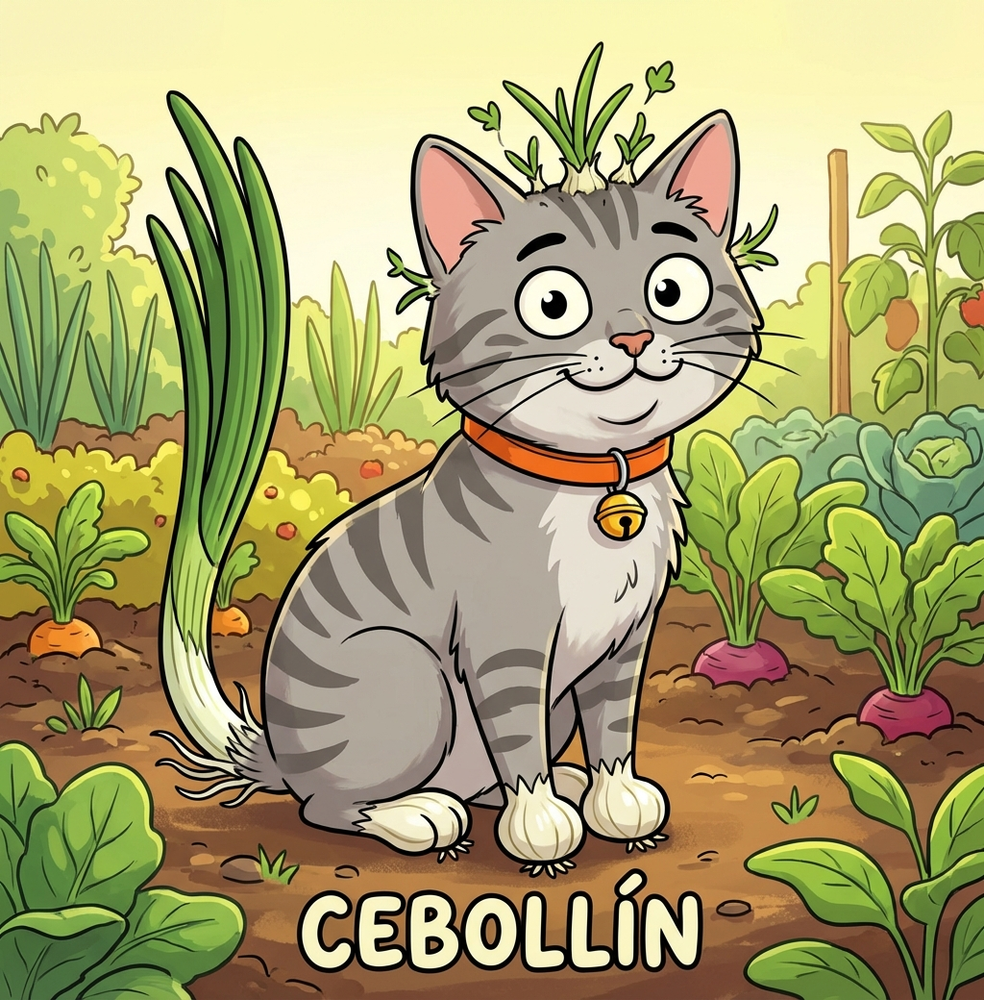
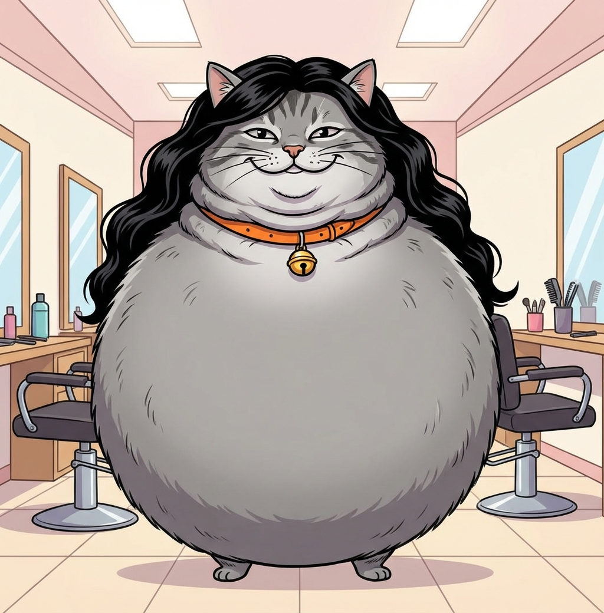
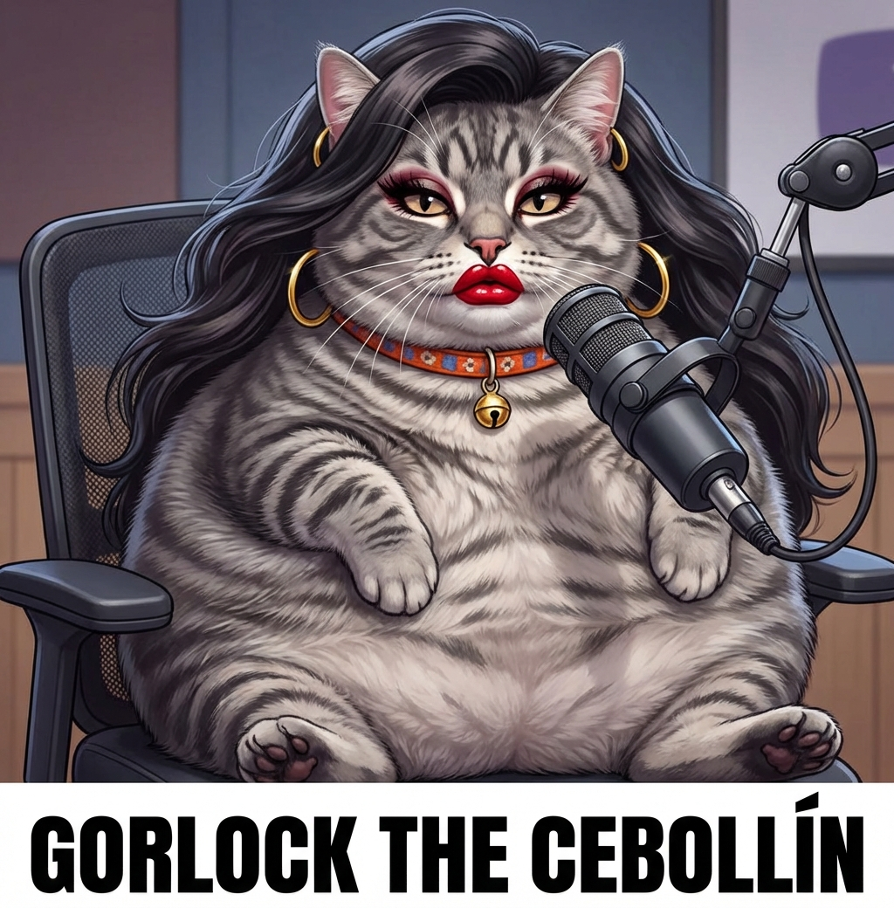

Gray tabby. Collar naranjo. Cascabel. Leyenda.
Fan page no oficial (pero hecha con amor por una IA)

En su hábitat natural: el jardín. Con cola de cebollín, brotecitos en la cabeza y sus patitas de ajo. El ayudante de huerto más feliz del mundo.

Recién salido de la peluquería con su melena flowing. El gato más estiloso del barrio. Fresh cut, purr-fect style.

Cebollín, on-air and fabulous. Con aros de oro, labial rojo y opiniones fuertes sobre la comida para gatos premium.